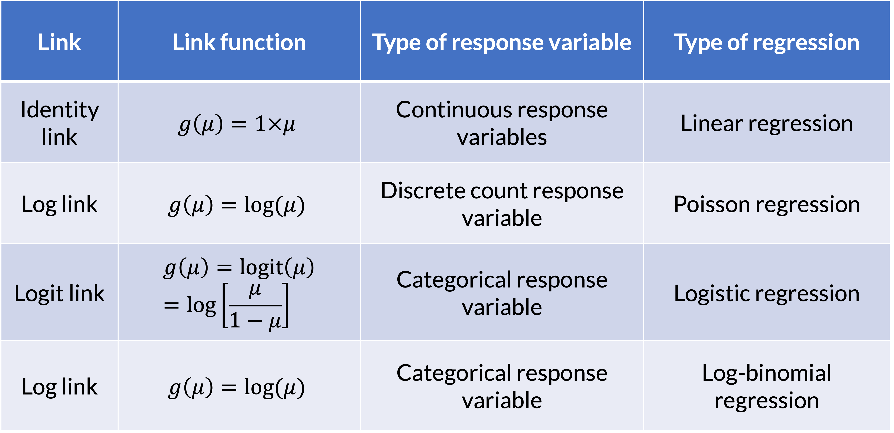

Lesson 16: Poisson Regression
2024-05-29
Learning Objectives
Review Generalized Linear Models and how we can branch to other types of regression.
Understand what we can measure with Poisson regression and how to interpret coefficients.
Understand how to adjust for different follow-up times among individuals
Learning Objectives
- Review Generalized Linear Models and how we can branch to other types of regression.
Understand what we can measure with Poisson regression and how to interpret coefficients.
Understand how to adjust for different follow-up times among individuals
Review: Generalized Linear Models (GLMs)

GLM: Random Component
- The random component specifies the response variable \(Y\) and selects a probability distribution for it
Basically, we are just identifying the distribution for our outcome
If Y is binary: assumes a binomial distribution of Y
If Y is count: assumes Poisson or negative binomial distribution of Y
If Y is continuous: assumea Normal distribution of Y
GLM: Systematic Component
- The systematic component specifies the explanatory variables, which enter linearly as predictors \[\beta_0+\beta_1X_1+\ldots+\beta_kX_k\]
Above equation includes:
- Centered variables
- Interactions
- Transformations of variables (like squares)
- Systematic component is the same as what we learned in Linear Models
GLM: Link Function
If \(\mu = E(Y)\), then the link function specifies a function \(g(.)\) that relates \(\mu\) to the linear predictor as: \[g\left(\mu\right)=\beta_0+\beta_1X_1+\ldots+\beta_kX_k\]
- \(g\left(\mu\right)\) is the transformation we make to \(E(Y)\) (aka \(\mu\)) so that the linear predictors (right side of equation) can be linked to the outcome
The link function connects the random component with the systematic component
Can also think of this as: \[\mu=g^{-1}\left(\beta_0+\beta_1X_1+\ldots+\beta_kX_k\right)\]
GLM: Link Function
Poll Everywhere Question 1
Learning Objectives
- Review Generalized Linear Models and how we can branch to other types of regression.
- Understand what we can measure with Poisson regression and how to interpret coefficients.
- Understand how to adjust for different follow-up times among individuals
Poisson Distribution
- This distribution is often used to model count data
- Examples:
- Distribution of number of deaths due to lung cancer
- Distribution of number of individuals diagnosed with leukemia
- Distribution of number of hospitalizations
- This distribution is often used to model rate data
- Examples:
- Distribution of number of deaths due to lung cancer per year
- Distribution of number of individuals diagnosed with leukemia over follow-up time
- Distribution of number of hospitalizations in a day
Example 1: Horseshoe Crabs and Satellites
Example of count data:
Each female horseshoe crab in the study had a male crab attached to her in her nest. The study investigated factors that affect whether the female crab had any other males, called satellites, residing near her. Explanatory variables that are thought to affect this included the female crab’s color, spine condition, and carapace width, and weight. The response outcome for each female crab is the number of satellites. There are 173 females in this study.
Poisson Distribution with a count
- The probability function of Poisson distribution: \[P(Y = y | \mu) = \dfrac{\mu^y e^{-\mu}}{y!}\]
- Where \(y\)’s are non-negative integers \(y=0, 1, 2,...\)
- Where \(\mu\) is the mean of \(Y\), that is \(E(Y)=\mu\)
- And also, \(\text{var}(Y)=\mu\)
- For a Poisson distribution, \(Y \sim \text{Poisson}(\mu)\)
- Range: \([0, \infty)\)

Poll Everywhere Question 2
Example 2: Lung Cancer Incidence
Example of rate data:
We can look at the lung cancer incident counts (cases) per age group for four Danish cities from 1968 to 1971. Since it’s reasonable to assume that the expected count of lung cancer incidents is proportional to the population size, we would prefer to model the rate of incidents per capita.
Poisson Distribution with a rate
- If we look at the probability of \(y\) events in a time period \(t\) for a Poisson random variable, we could write: \[P(Y = y | \mu) = \dfrac{\mu^y e^{-\mu}}{y!} = \dfrac{(\lambda t)^y e^{-\lambda t}}{y!}\]
- Where \(y\)’s are non-negative integers \(y=0, 1, 2,...\)
- Where \(\mu = \lambda t\), where \(\lambda\) is the expected number of events per unit time (aka rate)
- Then \(\mu\) is the expected number of events over time \(t\)
What does \(\lambda\) represent in the Poisson distribution?
- What does \(\lambda\) represent?
- A rate, the expected number of events in a given population over a given period time
- Example: Number of patient arrivals into the Emergency Room per hour
- The Poisson distribution is the prototype for assigning probabilities of observing any number of events
Review: Simple Logistic Regression
- Let Y is the dependent variable of interest and x is a predictor variable,
- In simple logistic regression, we have \[\log\left(\frac{\pi(X)}{1 - \pi(X)}\right) = \beta_0 + \beta_1 X\]
- where \(\pi (X) =P(Y = 1 \mid X = x)\)
Simple Poisson Regression Model
- What do we model in a Poisson regression?
- Log of conditional mean of Y given x
- Conditional mean of Y given x is represented as \(E(Y \mid X) = \mu(X)\)
- Let Y be a Poisson count for a given unit of time, then \(\mu(X) =\lambda(X)\)
- In a simple Poisson regression, we have
\[\ln(\mu(X)) = \ln(\lambda(X)) = \beta_0 + \beta_1 X\]
- So this is also called a log-linear model
Parameter Interpretation: Binary \(X\) (1/2)
In simple Poisson regression: \[\ln(\mu(X)) = \ln(\lambda(X)) = \beta_0 + \beta_1 X\]
When \(X\) is a binary variable: How do we interpret \(\beta_1\)?
- When \(X=0\): \[\ln(\mu(X = 0)) = \beta_0 + \beta_1 \cdot 0 = \beta_0\]
- \(\mu(X = 0) = \exp (\beta_0)\): the mean count or rate of \(Y\) when \(X=0\)
- When \(X=1\): \[\ln(\mu(X = 1)) = \beta_0 + \beta_1 \cdot 1 = \beta_0 + \beta_1\]
- \(\mu(X = 1) = \exp (\beta_0 + \beta_1)\): the mean count or rate of \(Y\) when \(X=1\)
- When \(X=0\): \[\ln(\mu(X = 0)) = \beta_0 + \beta_1 \cdot 0 = \beta_0\]
Parameter Interpretation: Binary \(X\) (2/2)
- When \(X\) is a binary variable: How do we interpret \(\beta_1\)?
By subtraction, we have \[\beta_1 = \ln(\mu(X = 1)) - \ln(\mu(X = 0)) = \ln \left( \dfrac{\mu(X = 1)}{\mu(X = 0)} \right)\]
\(\beta_1\): log-count ratio or log-rate ratio
- Since \(\mu(X)\) is \(\lambda(X)\) is the rate of \(Y\)
So \(\exp(\beta_1)\) is the count or rate ratio!
Parameter Interpretation: Continuous \(X\)
When \(X\) is a continuous variable: How do we interpret \(\beta_0\)?
\(\beta_0\): log-count or log-rate when \(X\) is 0
So \(\exp(\beta_0)\) is the expected count or rate when \(X\) is 0
When \(X\) is a continuous variable: How do we interpret \(\beta_1\)?
- \(\beta_1\): log-count ratio or log-rate ratio for every 1 unit increase in \(X\)
- Since \(\mu(X)\) is \(\lambda(X)\) is the rate of \(Y\)
- So \(\exp(\beta_1)\) is the rate ratio for every 1 unit increase in \(X\)
- \(\beta_1\): log-count ratio or log-rate ratio for every 1 unit increase in \(X\)
Example 1: Horseshoe Crabs and Satellites
crab_mod = glm(num.satellites ~ width,
family=poisson,
data=hcrabs)
tidy(crab_mod, conf.int=T,
exponentiate=T) %>%
gt() %>%
tab_options(table.font.size = 35) %>%
fmt_number(decimals = 2)| term | estimate | std.error | statistic | p.value | conf.low | conf.high |
|---|---|---|---|---|---|---|
| (Intercept) | 0.04 | 0.54 | −6.09 | 0.00 | 0.01 | 0.11 |
| width | 1.18 | 0.02 | 8.22 | 0.00 | 1.13 | 1.23 |
Interpretation: For every 1-cm increase in carapace width, the expected number of satellites increases by 18% (95% CI: 13%, 23%).
Example 2: Lung Cancer Incidence

Regression table
| term | estimate | std.error | statistic | p.value | conf.low | conf.high |
|---|---|---|---|---|---|---|
| (Intercept) | 0.004 | 0.200 | −28.125 | 0.000 | 0.002 | 0.005 |
| cityHorsens | 0.719 | 0.182 | −1.818 | 0.069 | 0.503 | 1.026 |
| cityKolding | 0.690 | 0.188 | −1.978 | 0.048 | 0.476 | 0.995 |
| cityVejle | 0.762 | 0.188 | −1.450 | 0.147 | 0.525 | 1.099 |
| age55-59 | 3.007 | 0.248 | 4.434 | 0.000 | 1.843 | 4.901 |
| age60-64 | 4.566 | 0.232 | 6.556 | 0.000 | 2.907 | 7.236 |
| age65-69 | 5.857 | 0.229 | 7.704 | 0.000 | 3.748 | 9.249 |
| age70-74 | 6.404 | 0.235 | 7.891 | 0.000 | 4.043 | 10.212 |
| age75+ | 4.136 | 0.250 | 5.672 | 0.000 | 2.523 | 6.762 |
Poll Everywhere Question 3
Learning Objectives
Review Generalized Linear Models and how we can branch to other types of regression.
Understand what we can measure with Poisson regression and how to interpret coefficients.
- Understand how to adjust for different follow-up times among individuals
Building towards person-years
- In an example of number of patient arrivals, an event does not conclude the study
- If someone arrives within the first minute of the study, then we keep counting
- We may be able to study the association of arrivals with qualities of the hospital, but we can’t measure qualities of the individuals arriving
- For example, in the lung cancer study, we can only discuss the incidence of cancer at the city-wide level
- What happens if we want to measure qualities of the individual?
- We can measure a hospitalization rate
Why Person-Years?
- If we are measuring at the individual level and counting something that is “terminal” then our count will always be 0 or 1
- Example: Number of individuals diagnosed with leukemia
- This only happens once, so how do we measure the rate here?
- Since rate involves the counts and time – we can use the time to diagnosis to estimate the rate
- Often expressed in units such as events per thousand person-years
- Person-years allow us to follow individuals for different amounts of time
What is a Person-Year and how to calculate?
- One person-year is a unit of time defined as one person being followed for one year
- Person-years for a sample of n subjects is calculated as the total years followed for the n subjects, where each subject could have different follow-up time
- Example: suppose we have 5 subjects, two of the subjects were followed for 2 years, and two of them are followed for 3 years and the fifth subject was followed for 3.8 years
\[\text{person-years} = 2 \text{ people} \cdot 2 \text{ years} +2 \text{ people} \cdot 3 \text{ years}+ 1 \text{ person} \cdot 3.8 \text{ years} = 13.8 \text{ person-years}\]
Calculating Rate
- Suppose that we observe one event during the follow-up period, then
\[\begin{aligned} \text{Rate of event} &= \dfrac{\# events}{\text{person-years}}= \dfrac{1 \text{ event}}{13.8 \text{person-years}} \\ &= 0.072 \text{ events per person−year} \\ &=72 \text{ events per } 1000 \text{ person−years} \end{aligned}\]
Now our rate of event is measured per person-year
- Often use 1000 person-years to count the events with whole numbers
Including an offset when we have different follow-up times
What if we have data that each observation has different period of time?
- For example, we look at number of ED visits when subjects are enrolled in Oregon Health Plan, however, each subjects are enrolled in the plan for different length of time…
- How do we incorporate this different length of time?
Note we have: \(\mu = \lambda t\) and with predictor \(X\), \(\mu(X) = \lambda(X) \cdot t(X)\)
- \(t\) is now a function of the individual, represented with \(X\)
Then we construct:
\[\begin{aligned} \ln(\lambda(X)) = & \beta_0 + \beta_1 X \\ \ln(\lambda(X)) = \ln\left(\dfrac{\mu(X)}{t(X)}\right) = \ln(\mu(X)) - \ln(t(X)) = &\beta_0 + \beta_1 X \\ \ln(\mu(X)) = & \ln(t(X)) + \beta_0 + \beta_1 X\\ \end{aligned}\]
Including an offset when we have different follow-up times
- That is, to incorporate the different lengths in the model,
\[\ln(\mu(X)) = \ln(t(X)) + \beta_0 + \beta_1 X\]
We have one more term in the model and this term is called offset, a known term in the model since \(t(X)\) is known for each individual
\(\ln(t(X))\) is called the offset
Offsets can also be something like the population size in a city…
Example 2: Lung Cancer Incidence
Call:
glm(formula = cases ~ city + age, family = poisson, data = lc_inc,
offset = lpop)
Coefficients:
Estimate Std. Error z value Pr(>|z|)
(Intercept) -5.6321 0.2003 -28.125 < 2e-16 ***
cityHorsens -0.3301 0.1815 -1.818 0.0690 .
cityKolding -0.3715 0.1878 -1.978 0.0479 *
cityVejle -0.2723 0.1879 -1.450 0.1472
age55-59 1.1010 0.2483 4.434 9.23e-06 ***
age60-64 1.5186 0.2316 6.556 5.53e-11 ***
age65-69 1.7677 0.2294 7.704 1.31e-14 ***
age70-74 1.8569 0.2353 7.891 3.00e-15 ***
age75+ 1.4197 0.2503 5.672 1.41e-08 ***
---
Signif. codes: 0 '***' 0.001 '**' 0.01 '*' 0.05 '.' 0.1 ' ' 1
(Dispersion parameter for poisson family taken to be 1)
Null deviance: 129.908 on 23 degrees of freedom
Residual deviance: 23.447 on 15 degrees of freedom
AIC: 137.84
Number of Fisher Scoring iterations: 5Further reading / tutorials on Poisson regression
When people are followed for different amounts of time, we should include an offset
- Poisson Regression Modeling Using Rate Data: section from above site that discusses offsets
We can use Wald test and LRT in the same way as logistic regression to test our coefficients and variables
Lesson 16: Poisson Regression